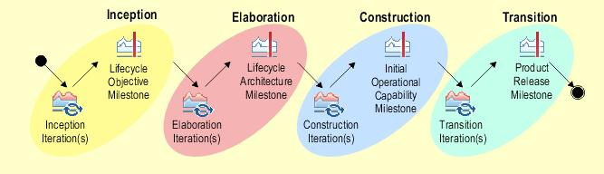

| Roadmap: OpenUP/Basic Roadmap |
 |
|
OpenUP/Basic is an iterative software development process that is minimal, complete, and extensible. It is governed by four core principles:
Roles perform tasks that consume and produce artifacts. OpenUP/Basic describes the minimal set of roles, tasks, and artifacts involved in software development: Software development lifecycleOpenUP/Basic is an iterative process distributed throughout four phases: Inception, Elaboration, Construction, and Transition. Each phase consists of one or more iterations, where stable, working versions of the software are developed and released, with the completion of each iteration representing a minor milestone for the project and contributing to the successful achievement of the Phase's major milestone where phase objectives are met. The following diagram depicts the OpenUP/Basic lifecycle.  Figure 1: The OpenUP/Basic lifecycle Organization of contentThe content is organized around four major areas:
Figure 2: Four areas of content organization for OpenUP/Basic
|
This program and the accompanying materials are made available under the View copyright information here: OpenUP Copyright |